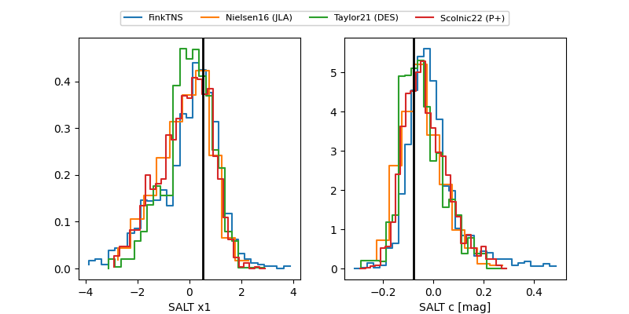

FINK: ZTF25abmdrnk
Lasair: ZTF25abmdrnk
ALeRCE: ZTF25abmdrnk
TNS: 2025wkp
YSE: 2025wkp
ZTF25abmdrnk (ztf,fink)
2025wkp (tns,yse)
PS25hib (panstarrs)
equatorial (ra, dec) = (45.3603,-2.36557)
galactic (l, b) = (180.0168,-50.24474)

last ps1::g=20.66, ps1::i=20.69, ps1::r=20.53, ztfg=19.97, ztfr=20.49
3 ps1::g, 3 ps1::i, 3 ps1::r, 1 ztfg, 1 ztfr detections